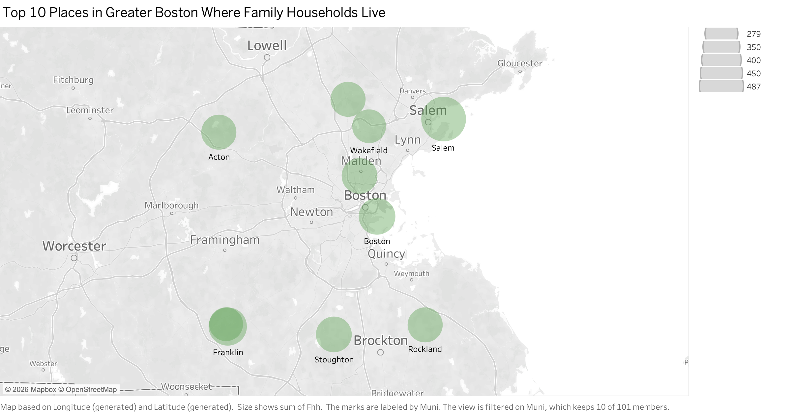
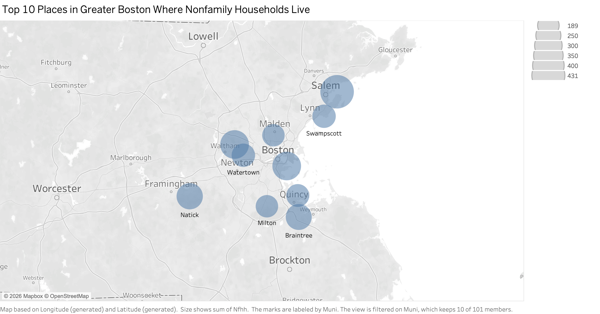
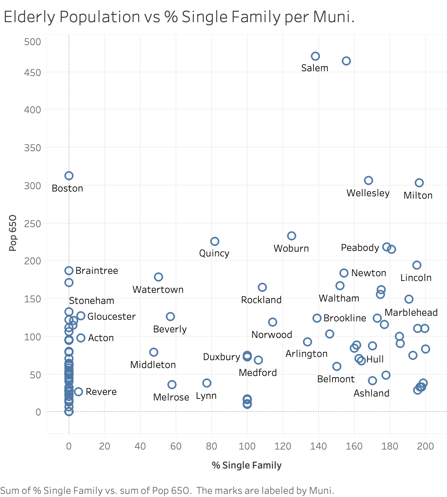
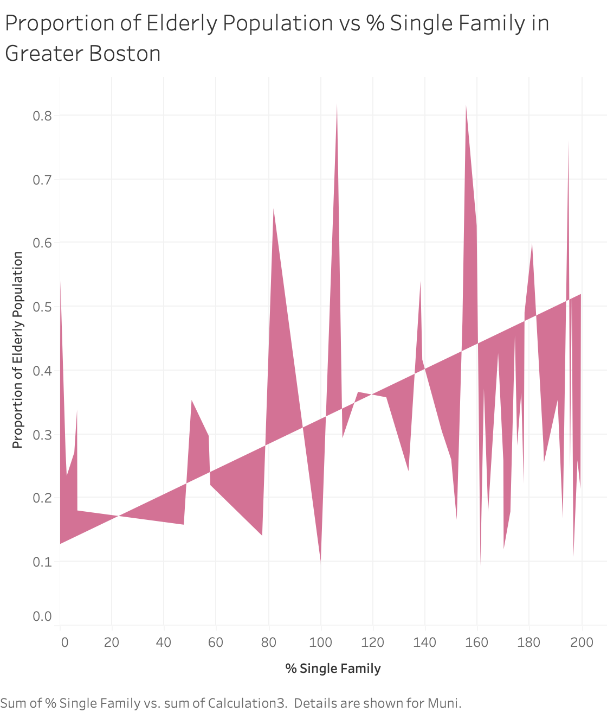

 Major cities are labeled in light gray to provide geographic context. The visualization suggests that the municipalities with the largest numbers of family households tend to be located outside the densest urban areas (aside from Boston and Salem). This pattern helps indicate that families prefer less densely populated environments, potentially reflecting preferences for quieter neighborhoods, perceived safety, or access to larger living spaces. However, the presence of Boston and Salem among the top ten suggests that a lot of families choose to reside in urban settings, which may be influenced by factors such as proximity to employment, cultural amenities, or public transportation. Further analysis we can do to better understand which factors are at play in the residential choices of families is to look at the distribution of household income in these ten areas.
While I was working with the income data in Tableau, I noticed that the categories weren't named in the same way across the dataset. Some incomes had the prefix with inc-, some prefixed with i-, or something else, which made it hard to order the measures and I needed to reference back and forth to the the dataset. Another inconsitency or possibly misleading element of the data was that the incomes increased on an interval of 5k and then suddenly jumped 25k from 75k to 100k and then another sudden jump by 50k from 150k to 200k. This difference can't be seen at first sight and if shown using a line graph with constant intervals, the readers would easily get misled. Therefore, I didn't choose to use a line graph, instead, I chose to use a density graph. Another advantage of using a density graph was that visually, the dots are less crowded than if using a line graph (10 lines on one graph is overwhelming). However, the trade off is that we can't tell what munipality each data points represents. Moreover, it's hard to tell exactly how much greater or less than each density point is compared to another, because the faint color differences are hard to percieve. Overall, using a density plot allows us tosee which type of income is more common in the top ten municipalities, without needing to know exactly which data point is which municipality.
.png) I observe that a large number of people have higher incomes, with the
highest peak at incomes over 200k and another peak at incomes between 75k
and 100k. This result aligns with my expectations. As single family homes
are more expensive, it makes sense that the top ten municipalities with
the most family households would also have higher incomes. However, I also
notice that there are still households with lower incomes living in these
areas as well. This could be due to a variety of factors, such as
affordable housing options within these municipalities, or families
prioritizing values that are more important to them than housing cost. It
would be interesting to further investigate the specific housing options
available in these municipalities and how they cater to different income
levels.
I observe that a large number of people have higher incomes, with the
highest peak at incomes over 200k and another peak at incomes between 75k
and 100k. This result aligns with my expectations. As single family homes
are more expensive, it makes sense that the top ten municipalities with
the most family households would also have higher incomes. However, I also
notice that there are still households with lower incomes living in these
areas as well. This could be due to a variety of factors, such as
affordable housing options within these municipalities, or families
prioritizing values that are more important to them than housing cost. It
would be interesting to further investigate the specific housing options
available in these municipalities and how they cater to different income
levels. Moving on, let's take a look at the distribution of nonfamily households in a similar manner.  In contrast to family households, nonfamily households appear to cluster more strongly near urban centers, particularly in municipalities closer to Boston. This spatial pattern is consistent with the hypothesis that nonfamily households may prioritize proximity to employment opportunities, public transportation access, and urban amenities including restaurants and entertainment venues.
Similar to the previous case, I'm interested in understanding the income distribution of nonfamily households.
.png) In this graph, the main peak is at the income range of 75k to 100k, which
is lower than the highest peak for family households. This result is also
in line with my expectations, as nonfamily households may include a higher
proportion of younger individuals, students, or single professionals who
may have lower incomes compared to family households.
In this graph, the main peak is at the income range of 75k to 100k, which
is lower than the highest peak for family households. This result is also
in line with my expectations, as nonfamily households may include a higher
proportion of younger individuals, students, or single professionals who
may have lower incomes compared to family households. Another interesting observation I have is that the legends show a difference in overall household totals. The range of family households (279–487 among the top municipalities) exceeds that of nonfamily households (189–431), indicating that family households are more numerous overall in the dataset. A comparison of aggregate counts confirms this: there are approximately 15,000 family households compared to just over 6,000 nonfamily households. Despite being fewer in number, nonfamily households appear more spatially concentrated, particularly in municipalities adjacent to the urban core. One notable case is Salem, which shows one of the largest total household counts and a relatively balanced distribution between family and nonfamily households. This raises the question of what local factors might contribute to this pattern.
It would be impossible to analyze every single factor, but one factor that would be interesting to study is age. We can investigate whether municipalities with larger elderly populations also have higher proportions of land zoned for single-family housing. If this relationship exists, it may suggest that areas dominated by single-family housing tend to attract or retain older residents, potentially reflecting life-cycle housing preferences such as homeownership stability or aging in place. Or this relationship is negative, then possible as the "Living Little" suggests, the elderly are sizing down and unable to maintain single family homes.
 Municipalities with more single-family housing and older populations may also be more likely to contain established family households, while areas with fewer single-family zones and younger populations may correspond more closely to nonfamily households, including young professionals or students. Although this graph is able to show data for each municipality, it's not the best format to visualize the relationship between elderly population and % single family because the axes are different units and ranges. Instead, I decided to sacrifice municipality level clarity in exchange for a clearer visualization that could tell us something about the correlation we're invesitagting.
 Now we can more clearly observe some trends. First, I notice that the porportion of elderly population is mostly underneath the line for higher percentage (150-200%) of single family housing land. The rightmost peak above the line representing high proportion of elderly population and high percentage of single family housing is in Milton, which is also included in the top 10 municipalities for nonfamily households. This data faintly suggests that the elderly population is following the housing trend of nonfamily households.
Second, there's actually not a very defintive trend at all. As we can see from the up and down of the graph, there are many municipalities with a low percentage of single family housing land and a low proportion of elderly population, or the opposite. This result is surprising to me because I expected to see a clearer correlation between the two variables. This result suggests that age is not a primary factor in determining the distribution of housing types in a municipality.